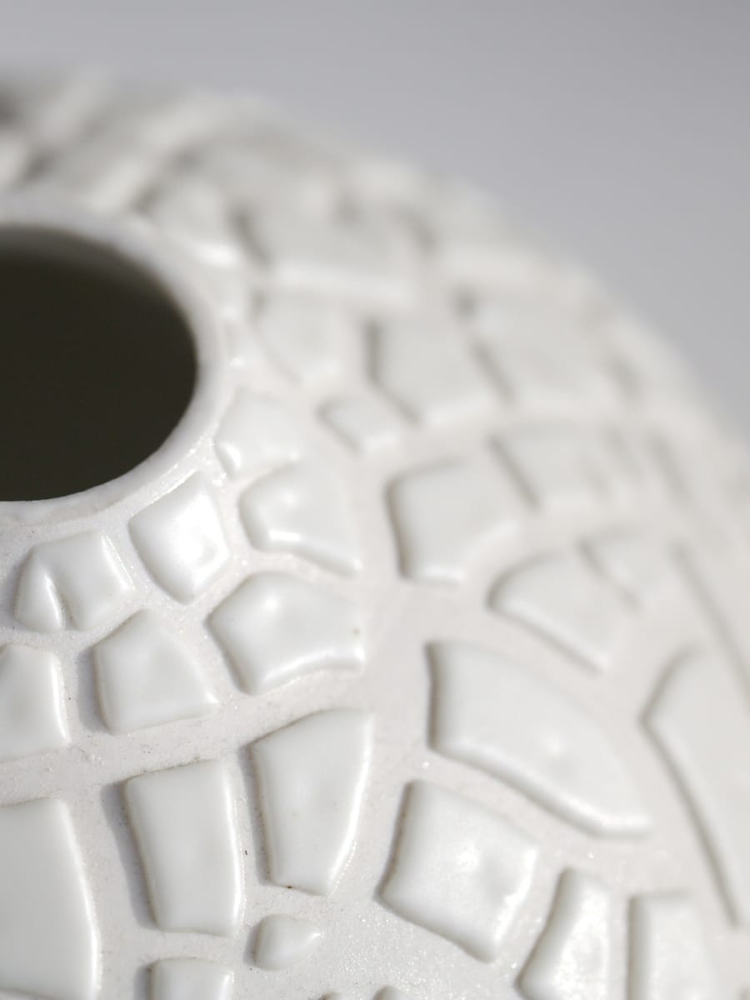

12 al 14 de junio de 2026
Jornadas de Artesania
Tres dias para descubrir oficios milenarios, conversar con maestras y maestros artesanos, y sumarse a talleres practicos en el corazon de la ciudad.
- Sede
- Casa de Cultura
- Aforo
- 250 plazas por sesion
- Entrada
- Gratuita con inscripcion previa

Informacion practica
Tres dias, tres miradas
Cada jornada se centra en una familia de oficios. Mira el avance del programa y elige por donde quieres empezar.
Galeria destacada